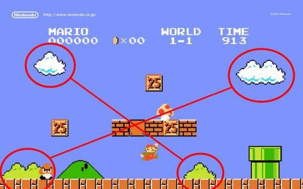
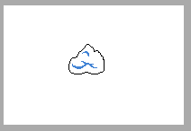
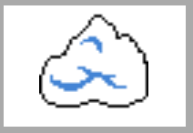
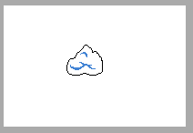
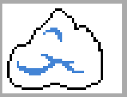
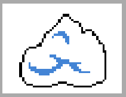
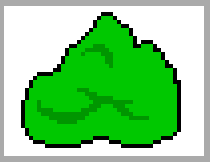
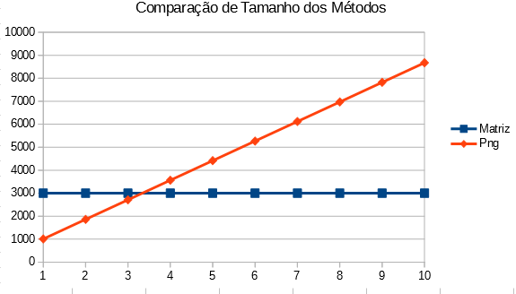

Olá pessoal, nesta semana estou desenvolvendo um jogo para uma game jam, junto com dois amigos: Gui Mendes (arte) e Marcos Gomes (áudio). Neste jogo eu estou apenas programando, em javascript, claro!
Mas porque estou falando sobre isso? Essa game jam é uma jam muito específica e que me deixou com vontade de falar sobre o processo de desenvolvimento. A game jam em questão é a JS13kGame, nela você tem que criar um jogo usando javascript, sem nenhum recurso extra (links para frameworsk e etc) e que, no total, tenha 13kb!
Você: Nossa!!! Apenas 13kb para um jogo?
Eu: Pois é!
Na realidade, é um pouco mais, pois você pode minificar o seu arquivo js e pode zipar todos os recursos, o que lhe dá um espaço a mais. O último teste que fiz, meus arquivos somavam 27kb e foram reduzidos à 4kb, após o processo citado. A jam começou dia 1 de agosto e termina 13 de setembro, mas já tem alguns jogos submetidos. Saca só esse pong em 3D! Viu o que dá para fazer com 13kb?
Você: OK! Mas como usar imagens e áudios nesses jogos? Ainda assim é pouco espaço, não?
Eu: Depende!
A resposta é "depende", pois você pode usar compressão de imagens, áudios, reutilizar recursos e até usá-los moderadamente. Além disso, você pode usar suas habilidades de programador para criar novas formas de representação. Por exemplo: Explorar recursos nativos do Canvas e a Audio API.
Diante deste problema, decidimos não usar imagens, para isso criamos uma forma de respresentação de imagens através de matriz, assim como decidimos não usar áudios, para isso criamos uma forma de compor músicas (16bits) de forma rápida usando arrays! Durante o desenvolvimento, verificamos que podemos reduzir ainda mais as matrizes e estou criando uma forma de compactá-las. Nesse post, no entanto, vou focar apenas nas imagens, para não ficar muito longo!
Para representar uma imagem, usamos uma matriz de valores. Os valores inicialmente eram em formato RGB, ou seja uma trinca de valores, por exemplo: 100,100,100. Depois evoluímos para utilizar o valor alfa, já que alguns elementos do jogo tem informações de transparência.
No entanto, havia muita informação repetida, pois uma cor era replicada em cada elemento da matriz. Então revolvemos utilizar um método antigo - usando nos consoles da dácada de 80/90 - que é o uso de indícies associados a paletas de cores. Isso foi usado no Mário, por exemplo, onde a núvem e o arbusto utilizam o mesmo sprite, apenas como mudança de paleta (veja na image do @curiosidades_tm).
O código abaixo é um exemplo desse mecanismo.
[0,1,1,0],
[1,0,0,1],
[1,0,0,1],
[0,1,1,0]
];
//paleta com duas cores
sprite_pallet = [[0,0,0,0],[255,0,0,1]];
Mas como faço para "desenhar"? Isso é simples, a cada elemento em sprite_map, cria-se um retângulo, com base no tamanho do pixel desejado. Vejamos:
for(var j=0; j < sprite_map[i].length; j++){
ctx.fillStyle="rgba("+sprite_pallet[ sprite_map[i][j] ] +")";
ctx.fillRect(j*pixelsize,i*pixelsize, pixelsize, pixelsize);
}
};
Para mostrar a utilidade isso, vou fazer uma comparação simples com o sprite da núvem (40px , 40px) e o método de matriz. O primeiro resultado é o seguinte: matriz = 3,6 kb; e o png = 461 bytes (imagem) + 156 bytes (file.js). O resultado em imagem, no canvas, é esse:
Ajustando o tamanho do png, no canvas:
Percebe-se que a qualidade é inferior, pois a imagem é muito pequena. Usando matriz, temos o seguinte resultado:
Ajustando o tamanho da matriz, basta mudar o tamanho do pixel:
É nítida a qualidade em comparação como o png, mas se eu aumentar a dimensão no png, no arquivo? Vejamos:
Como podemos ver, temos um resultado visual bem semelhante, mas o tamanho da imagem agora é: png = 852 bytes (imagem) + 156 bytes (file.js). Ok, a matriz ainda é matriz = 3.6 kb! Existem formas de reduzir isso, uma é minificar, como já disse, neste caso a redução seria para: matriz = 3.4 kb. Obs: como o código é pequeno, não há muita redução. A outra forma, falarei no próximo post, apenas adianto que o tamanho da matriz pode ficar matriz = 2,77 kb e minificado matriz: 2,62 kb :)
A grande vantagem, por hora, da matriz é no tamanho, pois a dimensão do png triplicou e o tamanho quase dobrou, sendo que a matriz se mantem com o mesmo tamanho. Se fizermos uma projeção, logo a matriz vai cobrir o png.
Outra vantagem é no reuso.Veja um exemplo de mudança de paleta!
Para duas imagens apenas, temos: matriz = 3,6 kb + 0,05 bytes e png = (852 bytes * 2) + 156 bytes (file.js). Fazendo um projeção com matriz = 3,6 kb + (0,05 bytes)*n e png = (852 bytes * n) + 156 bytes, onde n é o número de variações de paleta, temos para n = 10, matriz = 3,6 kb + 0,5 kb = 4,1kb; e png = 8,52 kb + 156 bytes. Veja no gráfico de comparação, quando n = 4, já é vantagem usar.
Matematicamente, o nosso método é melhor do que usar png, no que se refere à armazenamento, em dois pontos: dimensão e reuso. É isso galera, no próximo post conto um pouco mais sobre as matrizes de imagens e os problemas como imagens grandes!